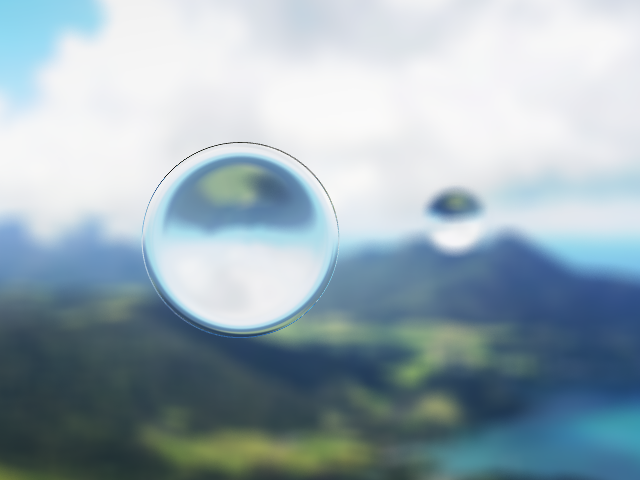

Assignment 2 : Raytracer
Alan Yao and Rohan Chitnis
README
Basic requirements
Test files were found online, from previous years. All images were written to png and rendered in under a minute, most in a few seconds or so.
Triangles and spheres with ambient/emissive light.
Transforms applied can create arbitrary ellipsoids.
Specular-only render of the same scene.
Shows the full spectrum of requirements. Shadows, reflections, transformations, point and directional lights, transformations, arbitrary polygons, and shading are all used.
A cool dragon with many polygons.
Extra credit features
We implemented many of the optional features as shown below. The dragon above required an AABB Tree to render quickly (~5s). All of the following images were rendered in under a minute unless otherwise specified.
Features: Acceleration structure, transparency with refraction, anti-aliasing, depth of field, phong interpolation, environment mapping, area lights/soft shadows, texture mapping.
vs
Antialiasing done with supersampling. Above images compares a standard checkerboard with and without antialiasing. Checkerboard is generated with a 2D texture function. Notice the artifacts without antialiasing. Rendered at 16rpp (rays per pixel).
Softshadowing by jittering shadowing rays to different locations on an area light. Low quality soft shadows, but could be improved with more rays. Rendered at 25rpp.
The dragon returns, this time to an environment/reflection map. We used a reflection map cube, as suggested in the textbook, for simplicity and since images are hard to generate for spherical maps.
vs
Two sphere picture. Depth of field implemented by jittering ray start positions to the focal plane. Rendered at 50rpp.
vs
Ability to parse .obj files implemented. The teapot has vertex normals specified. The left picture demonstrates no phong interpolation, and the right picture has phong interpolation. Rendered at 16rpp. The teapot travels the world.

Implemented refraction using Snell's law and Schlick's approximation. Here is an example of two spheres with refraction on the environment map. Rendered at 160rpp (two minutes).
An android stands on a tiled floor.
Back